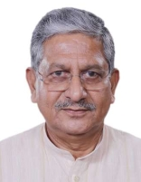
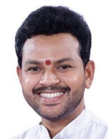

3வது நரேந்திர மோடி அமைச்சகம்

கால அளவு:
௯ ஜூன் ௨௦௨௪ - ௧ ஜனவரி ௨௦௨௫
துணைப் பிரதமர்கள்:
கலவை:
கேபினட் அமைச்சர்: ௩௦
மாநில அமைச்சர் (சுயேச்சை பொறுப்பு): ௫
மாநில அமைச்சர்: ௩௬
முக்கிய அமைச்சரவை அமைச்சர்
ராஜ்நாத் சிங்
பாதுகாப்பு அமைச்சகம்
அமித் ஷா
உள்துறை அமைச்சகம்
நிதின் கட்கரி
சாலை போக்குவரத்து மற்றும் நெடுஞ்சாலை அமைச்சகம்
ஜகத் பிரகாஷ் நத்தா
சுகாதாரம் மற்றும் குடும்ப நல அமைச்சகம்
அனைத்து அமைச்சர்கள்
நரேந்திர மோடி
அணுசக்தி துறை[பிரதமர்]விண்வெளி துறை[பிரதமர்]
பணியாளர்கள் பொது குறைகள் மற்றும் ஓய்வூதிய அமைச்சகம்[பிரதமர்]

ராஜ்நாத் சிங்
பாதுகாப்பு அமைச்சகம்[கேபினட் அமைச்சர்]
அமித் ஷா
ஒத்துழைப்பு அமைச்சகம்[கேபினட் அமைச்சர்]உள்துறை அமைச்சகம்[கேபினட் அமைச்சர்]

நிதின் கட்கரி
சாலை போக்குவரத்து மற்றும் நெடுஞ்சாலை அமைச்சகம்[கேபினட் அமைச்சர்].jpg)
ஜகத் பிரகாஷ் நத்தா
இரசாயனங்கள் மற்றும் உரங்கள் அமைச்சகம்[கேபினட் அமைச்சர்]சுகாதாரம் மற்றும் குடும்ப நல அமைச்சகம்[கேபினட் அமைச்சர்]

சிவராஜ் சிங் சவுகான்
விவசாய அமைச்சகம்[கேபினட் அமைச்சர்]ஊரக வளர்ச்சி அமைச்சகம்[கேபினட் அமைச்சர்]
_(cropped).jpg)
நிர்மலா சீதாராமன்
கார்ப்பரேட் விவகார அமைச்சகம்[கேபினட் அமைச்சர்]நிதி அமைச்சகம்[கேபினட் அமைச்சர்]

சுப்ரமணியம் ஜெய்சங்கர்
வெளியுறவு அமைச்சகம்[கேபினட் அமைச்சர்]
மனோகர் லால் கட்டார்
வீட்டுவசதி மற்றும் நகர்ப்புற வறுமை ஒழிப்பு அமைச்சகம்[கேபினட் அமைச்சர்]மின்சார அமைச்சகம்[கேபினட் அமைச்சர்]

எச். டி.
கனரக தொழில் அமைச்சகம்[கேபினட் அமைச்சர்]எஃகு அமைச்சகம்[கேபினட் அமைச்சர்]
.jpg)
பியூஷ் கோயல்
வர்த்தகம் மற்றும் தொழில்துறை அமைச்சகம்[கேபினட் அமைச்சர்]
தர்மேந்திர பிரதான்
கல்வி அமைச்சு[கேபினட் அமைச்சர்]
ஜிதன் ராம் மஞ்சி
குறு சிறு மற்றும் நடுத்தர தொழில்கள் அமைச்சகம்[கேபினட் அமைச்சர்]
பஞ்சாயத்து ராஜ் அமைச்சகம்[கேபினட் அமைச்சர்]
ராஜீவ் ரஞ்சன் சிங்
மீன்பிடி, கால்நடை பராமரிப்பு மற்றும் பால்வளத்துறை அமைச்சகம்[கேபினட் அமைச்சர்]பஞ்சாயத்து ராஜ் அமைச்சகம்[கேபினட் அமைச்சர்]

சர்பானந்தா சோனோவால்
கப்பல் போக்குவரத்து அமைச்சகம்[கேபினட் அமைச்சர்]
வீரேந்திர குமார் காடிக்
சமூக நீதி மற்றும் அதிகாரமளித்தல் அமைச்சகம்[கேபினட் அமைச்சர்]
ராம்மோகன் நாயுடு கிஞ்சராபு
சிவில் விமான போக்குவரத்து அமைச்சகம்[கேபினட் அமைச்சர்]
பிரகலாத் ஜோஷி
நுகர்வோர் விவகாரங்கள், உணவு மற்றும் பொது விநியோக அமைச்சகம்[கேபினட் அமைச்சர்]புதிய மற்றும் புதுப்பிக்கத்தக்க எரிசக்தி அமைச்சகம்[கேபினட் அமைச்சர்]

ஜுவல் ஓரம்
பழங்குடியினர் விவகார அமைச்சகம்[கேபினட் அமைச்சர்]
கிரிராஜ் சிங்
ஜவுளி அமைச்சகம்[கேபினட் அமைச்சர்]
அஸ்வினி வைஷ்ணவ்
தகவல் தொழில்நுட்ப அமைச்சகம்[கேபினட் அமைச்சர்]ரயில்வே அமைச்சகம்[கேபினட் அமைச்சர்]

ஜோதிராதித்ய சிந்தியா
தகவல் தொடர்பு அமைச்சகம்[கேபினட் அமைச்சர்]வடகிழக்கு பிராந்திய அபிவிருத்தி அமைச்சு[கேபினட் அமைச்சர்]

பூபேந்தர் யாதவ்
சுற்றுச்சூழல் மற்றும் வனத்துறை அமைச்சகம்[கேபினட் அமைச்சர்]
கஜேந்திரசிங் ஷெகாவத்
கலாச்சார அமைச்சகம்[கேபினட் அமைச்சர்]சுற்றுலா அமைச்சகம்[கேபினட் அமைச்சர்]

அன்னபூர்ணா தேவி யாதவ்
பெண்கள் மற்றும் குழந்தைகள் மேம்பாட்டு அமைச்சகம்[கேபினட் அமைச்சர்]
கிரண் ரிஜிஜு
சிறுபான்மை விவகார அமைச்சகம்[கேபினட் அமைச்சர்]பாராளுமன்ற விவகார அமைச்சகம்[கேபினட் அமைச்சர்]
_(cropped).jpg)
ஹர்தீப் சிங் பூரி
பெட்ரோலியம் மற்றும் இயற்கை எரிவாயு அமைச்சகம்[கேபினட் அமைச்சர்]’,_in_New_Delhi.JPG)
எல். மன்சுக் மாண்டவியா
தொழிலாளர் அமைச்சகம்[கேபினட் அமைச்சர்]இளைஞர் விவகாரங்கள் மற்றும் விளையாட்டு அமைச்சகம்[கேபினட் அமைச்சர்]

ஜி. கிஷன் ரெட்டி
நிலக்கரி அமைச்சகம்[கேபினட் அமைச்சர்]சுரங்க அமைச்சகம்[கேபினட் அமைச்சர்]

சிராக் பாஸ்வான்
உணவு பதப்படுத்தும் தொழில் அமைச்சகம்[கேபினட் அமைச்சர்]
சந்திரகாந்த் ரகுநாத் பாட்டீல்
ஜல் சக்தி அமைச்சகம்[கேபினட் அமைச்சர்]
ராவ் இந்தர்ஜித் சிங்
கலாச்சார அமைச்சகம்[மாநில அமைச்சர்]திட்டமிடல் அமைச்சகம்[மாநில அமைச்சர் (சுயேச்சை பொறுப்பு)]
புள்ளியியல் மற்றும் திட்ட அமலாக்க அமைச்சகம்[மாநில அமைச்சர் (சுயேச்சை பொறுப்பு)]

ஜிதேந்திர சிங்
அணுசக்தி துறை[மாநில அமைச்சர்]விண்வெளி துறை[மாநில அமைச்சர்]
புவி அறிவியல் அமைச்சகம்[மாநில அமைச்சர் (சுயேச்சை பொறுப்பு)]

அர்ஜுன் ராம் மேக்வால்
சட்டம் மற்றும் நீதி அமைச்சகம்[மாநில அமைச்சர் (சுயேச்சை பொறுப்பு)]பாராளுமன்ற விவகார அமைச்சகம்[மாநில அமைச்சர்]

பிரதாப்ராவ் கணபத்ராவ் ஜாதவ்
ஆயுர்வேத யோகா மற்றும் இயற்கை மருத்துவம் யுனானி சித்தா மற்றும் ஹோமியோபதி அமைச்சகம்[மாநில அமைச்சர் (சுயேச்சை பொறுப்பு)]
ஜெயந்த் சவுத்ரி
கல்வி அமைச்சு[மாநில அமைச்சர்]திறன் மேம்பாடு மற்றும் தொழில் முனைவோர் அமைச்சகம்[மாநில அமைச்சர் (சுயேச்சை பொறுப்பு)]

ஜிதின் பிரசாத்
வர்த்தகம் மற்றும் தொழில்துறை அமைச்சகம்[மாநில அமைச்சர்]தகவல் தொழில்நுட்ப அமைச்சகம்[மாநில அமைச்சர்]

ஸ்ரீபாத் யாசோ நாயக்
புதிய மற்றும் புதுப்பிக்கத்தக்க எரிசக்தி அமைச்சகம்[மாநில அமைச்சர்]மின்சார அமைச்சகம்[மாநில அமைச்சர்]

பங்கஜ் சௌத்ரி
நிதி அமைச்சகம்[மாநில அமைச்சர்]
கிரிஷன் பால்
ஒத்துழைப்பு அமைச்சகம்[மாநில அமைச்சர்]
அதவலே ராம்தாஸ் பாண்டு
சமூக நீதி மற்றும் அதிகாரமளித்தல் அமைச்சகம்[மாநில அமைச்சர்]
ராம் நாத் தாக்கூர்
விவசாய அமைச்சகம்[மாநில அமைச்சர்]
நித்யானந்த் ராய்
உள்துறை அமைச்சகம்[மாநில அமைச்சர்]
அனுப்ரியா பட்டேல்
இரசாயனங்கள் மற்றும் உரங்கள் அமைச்சகம்[மாநில அமைச்சர்]சுகாதாரம் மற்றும் குடும்ப நல அமைச்சகம்[மாநில அமைச்சர்]

வி.
ஜல் சக்தி அமைச்சகம்[மாநில அமைச்சர்]ரயில்வே அமைச்சகம்[மாநில அமைச்சர்]

பெம்மாசானி சந்திர சேகர்
தகவல் தொடர்பு அமைச்சகம்[மாநில அமைச்சர்]ஊரக வளர்ச்சி அமைச்சகம்[மாநில அமைச்சர்]

எஸ். பி. சிங் பாகேல்
மீன்பிடி, கால்நடை பராமரிப்பு மற்றும் பால்வளத்துறை அமைச்சகம்[மாநில அமைச்சர்]பஞ்சாயத்து ராஜ் அமைச்சகம்[மாநில அமைச்சர்]

ஷோபா கரந்த்லாஜே
தொழிலாளர் அமைச்சகம்[மாநில அமைச்சர்]குறு சிறு மற்றும் நடுத்தர தொழில்கள் அமைச்சகம்[மாநில அமைச்சர்]

கீர்த்தி வர்தன் சிங்
சுற்றுச்சூழல் மற்றும் வனத்துறை அமைச்சகம்[மாநில அமைச்சர்]வெளியுறவு அமைச்சகம்[மாநில அமைச்சர்]

பி. எல். வர்மா (உத்தர பிரதேச அரசியல்வாதி)
நுகர்வோர் விவகாரங்கள், உணவு மற்றும் பொது விநியோக அமைச்சகம்[மாநில அமைச்சர்]
சாந்தனு தாக்கூர்
கப்பல் போக்குவரத்து அமைச்சகம்[மாநில அமைச்சர்]
சுரேஷ் கோபி
பெட்ரோலியம் மற்றும் இயற்கை எரிவாயு அமைச்சகம்[மாநில அமைச்சர்]சுற்றுலா அமைச்சகம்[மாநில அமைச்சர்]

எல். முருகன்
தகவல் மற்றும் ஒலிபரப்பு அமைச்சகம்[மாநில அமைச்சர்]பாராளுமன்ற விவகார அமைச்சகம்[மாநில அமைச்சர்]

அஜய் தம்தா
சாலை போக்குவரத்து மற்றும் நெடுஞ்சாலை அமைச்சகம்[மாநில அமைச்சர்]
பாண்டி சஞ்சய் குமார்
உள்துறை அமைச்சகம்[மாநில அமைச்சர்]
கமலேஷ் பாஸ்வான்
ஊரக வளர்ச்சி அமைச்சகம்[மாநில அமைச்சர்]
பகீரத் சௌத்ரி
விவசாய அமைச்சகம்[மாநில அமைச்சர்]
சதீஷ் சந்திர துபே
நிலக்கரி அமைச்சகம்[மாநில அமைச்சர்]சுரங்க அமைச்சகம்[மாநில அமைச்சர்]

சஞ்சய் சிங்
பாதுகாப்பு அமைச்சகம்[மாநில அமைச்சர்]
ரவ்னீத் சிங்
உணவு பதப்படுத்தும் தொழில் அமைச்சகம்[மாநில அமைச்சர்]ரயில்வே அமைச்சகம்[மாநில அமைச்சர்]

துர்கா தாஸ் உய்கே
பழங்குடியினர் விவகார அமைச்சகம்[மாநில அமைச்சர்]
ரக்ஷா கதாசே
இளைஞர் விவகாரங்கள் மற்றும் விளையாட்டு அமைச்சகம்[மாநில அமைச்சர்]
சுகந்தா மஜும்தார்
வடகிழக்கு பிராந்திய அபிவிருத்தி அமைச்சு[மாநில அமைச்சர்]கல்வி அமைச்சு[மாநில அமைச்சர்]

சாவித்ரி தாக்கூர்
பெண்கள் மற்றும் குழந்தைகள் மேம்பாட்டு அமைச்சகம்[மாநில அமைச்சர்]
டோகன் சாஹு
வீட்டுவசதி மற்றும் நகர்ப்புற வறுமை ஒழிப்பு அமைச்சகம்[மாநில அமைச்சர்]
ராஜ் பூஷன் சௌத்ரி
ஜல் சக்தி அமைச்சகம்[மாநில அமைச்சர்]
பூபதி ராஜு ஸ்ரீனிவாச வர்மா
கனரக தொழில் அமைச்சகம்[மாநில அமைச்சர்]எஃகு அமைச்சகம்[மாநில அமைச்சர்]

ஹர்ஷ் மல்ஹோத்ரா
கார்ப்பரேட் விவகார அமைச்சகம்[மாநில அமைச்சர்]
நிம்புஎன் ஜெயந்திபாய் பாம்பானியா
நுகர்வோர் விவகாரங்கள், உணவு மற்றும் பொது விநியோக அமைச்சகம்[மாநில அமைச்சர்]
முரளிதர் மோஹோல்
சிவில் விமான போக்குவரத்து அமைச்சகம்[மாநில அமைச்சர்]ஒத்துழைப்பு அமைச்சகம்[மாநில அமைச்சர்]

ஜார்ஜ் குரியன்
மீன்பிடி, கால்நடை பராமரிப்பு மற்றும் பால்வளத்துறை அமைச்சகம்[மாநில அமைச்சர்]சிறுபான்மை விவகார அமைச்சகம்[மாநில அமைச்சர்]

பபித்ரா மார்கெரிட்டா
வெளியுறவு அமைச்சகம்[மாநில அமைச்சர்]ஜவுளி அமைச்சகம்[மாநில அமைச்சர்]